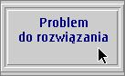

3. Definiowanie operacji na obiektach (metody)
Zestaw operacji na obiektach okre¶lany jest przez definicjê metod klasy.
Pojêcie metody zbli¿one jest do znanego ju¿ nam pojêcia funkcji.
Metoda - tak samo jak funkcja - to wyodrêbniony zestaw czynno¶ci, zapisywany
jednorazowo w postaci fragmentu kodu, który mo¿e byæ wywo³ywany wielokrotnie
z innych miejsc programu.
Metody s³u¿± g³ównie (ale nie tylko i niekoniecznie) do wykonywania operacji na obiektach.
Zatem - w odró¿nieniu od funkcji - metody zwykle wywo³ywane s± na rzecz konkretnych obiektów.
Wywo³ania "na rzecz" obiektu (jak ju¿ widzieli¶my) dokonuje siê za pomoc±
"operatora" kropka. Np. je¶li p - oznacza obiekt klasy Para (czyli jest referencj±
do obiektu klasy Para), a w klasie tej zdefiniowano metodê show, to wywo³anie
tej metody na rzecz tego obiektu zapisujemy jako:
p.show();
"Wywo³anie na rzecz obiektu" oznacza to samo, co "pos³anie polecenia do obiektu"
lub "komunikatu do obiektu" lub "wykonanie operacji na obiekcie".
W tym przypadku (dla metody show):
wywo³anie metody show na rzecz obiektu p
=
pos³anie komunikatu/polecenie show do obiektu p
=
wykonanie operacji uwidocznienia obiektu p
Schematyczna postaæ definicji metody jest nastêpuj±ca:
[ specyfikator_dostêpu] typ_wyniku nazwa_metody( lista_parametrów ) {
// ... instrukcje wykonywane po wywo³aniu metody
}
Uwagi:
- nawiasy kwadratowe oznaczaj± opcjonalno¶æ
- kod zawarty pomiêdzy nawiasami klamrowymi nazywany jet cia³em metody
Specyfikator dostêpu okre¶la czy metoda mo¿e byæ wywo³ana spoza klasy, w której jest zdefiniowana. W szczególno¶ci:
- specyfikator public mówi o tym, ¿e dana metoda mo¿e byæ wywo³ana z dowolnej innej klasy
- a private - oznacza, ¿e metoda mo¿e byæ wywo³ana tylko w tej klasie, w której zosta³a zdefiniowana
Nazwê metody zaczynamy od ma³ej litery, stosuj±c dalej notacjê wêgiersk±,
np. count, setPrice, getAuthor
Te metody, które chcemy udostêpniæ jako ogólniedostêpne
operacje na obiektach oznaczamy s³owem public; metody "robocze", które
maj± znaczenie tylko dla nas (twórców klasy) i nie powinny byæ dostêpne dla innych u¿ytkowników klasy - oznaczamy s³owem private.
Lista parametrów zawiera rozdzielone przecinkami deklaracje parametrów,
które metoda otrzymuje przy wywo³aniu. Lista mo¿e byæ pusta (brak argumentów).
Metoda mo¿e zwracaæ wynik (wtedy w jej definicji musimy podaæ konkretny typ
wyniku, a zakoñczenie dzia³ania metody powinno nastêpowaæ na skutek instrukcji
return zwracaj±cej dane podanego typu). Je¶li metoda nie zwraca ¿adnego wyniku to jej typ wyniku okre¶lamy s³owem kluczowym void, a metoda mo¿e skoñczyæ dzia³anie na skutek dobiegniêcia do zamykaj±cego nawiasu klamrowego lub wykonania instrukcji return bez argumentów
Instrukcja return ma postaæ:
return [ wyra¿enie ];
Np. metoda zwracaj±ca sumê dwóch liczb ca³kowitych mo¿e wygl±daæ tak:
int suma(int x, int y) {
int z = x + y;
return z;
}
lub tak
int suma(int x, int y) {
return x + y;
}
Przy wywo³aniu metoda suma uzyskuje dwa przekazane jej argumenty
jako parametry x i y. Jej dzia³anie polega na dodaniu obu warto¶ci parametrów
i zwróceniu (do miejsca wywo³ania) wyniku. Obowi±zkowo, w definicji metody
trzeba by³o podaæ typ zwracanego wyniku.
Przyk³ad innej metody:
void say(String s) {
System.out.println(s);
}

Wywo³anie metody say spowoduje wyprowadzenie na
konsolê przekazanego jako argument napisu. Metoda nie zwraca ¿adnego wyniku,
mimo to trzeba by³o okre¶liæ typ wyniku s³owem kluczowym void (dok³adnie "nie dotyczy", znaczy - brak wyniku).
W Javie argumenty przekazywane s± metodom wy³±cznie przez warto¶æ.
Oznacza to, ¿e w samej metodzie odwo³ujemy siê nie do faktycznego argumentu,
ale do jego kopii. Zatem zmiany przekazanego metodzie argumentu s± lokalne,
dotycz± wy³±cznie kopii i nie dotykaj± orygina³u.
Np. po wywo³aniu metody:
void incr(int x) {
++x;
}
ze zmienn± z = 1 jako arguementem w samej metodzie zmienna (parametr) x
uzyska warto¶æ 2, ale po zakoñczeniu dzia³ania metody i powrocie sterowania
do punktu wywo³ania zmienna z bêdzie mia³a nadal warto¶æ 1.
To samo dotyczy typów obiektowych. Pamiêtamy: zmienne oznaczaj±ce obiekty zawieraj± referencje, a nie same obiekty.
Zatem np. w ew. metodzie przestawPary:
void przestawPary(Para p1, Para p2) {
Para temp = p1;
p1 = p2;
p2 = temp;
}
nie uzyskamy zamierzonego rezultatu, bowiem metoda otrzymuje tylko warto¶ci
referencji, a nie odniesienia do nich i wszelkie operacje na tych referencjach
dotycz± kopii orygina³ów.
Nie znaczy to jednak, ¿e w metodach nie mo¿emy dzia³aæ na obiektach. Referencje
przecie¿ na nie wskazuj±: trzeba zatem - poprzez nie - odwo³ywaæ siê do pól
i metod klasy i za ich pomoc± (je¶li jest to mo¿liwe) zmieniaæ obiekty. O czym dalej.
W klasie mog± byæ definiowane metody o tej samej nazwie, ale ró¿ni±ce siê liczb± i/lub typami argumentów.
Nazywa siê to przeci±¿aniem metod.
Po co taka mo¿liwo¶æ?
Wyobra¼my sobie, ¿e na obiektach klasy par liczb ca³kowitych chcieliby¶my wykonywaæ operacje:
- dodawania innych obiektów-par
- dodawania (do sk³adników pary) kolejno dwóch podanych liczb c³akowitych
- dodawania (do ka¿dego sk³adnika pary) jednej i tej samej podanej liczby ca³kowitej
Gdyby nie by³o przeci±¿ania metod musieliby¶my dla ka¿dej operacji wymy¶laæ
inn± nazwê metody. A przecie¿ istota operacji jest taka sama (wystarczy wiêc
nazwa add), a jej u¿ycie powinno byæ jasne z kontekstu (okre¶lanego przez argumenty).
Dziêki przeci±¿aniu mo¿na w klasie Para np. zdefiniowaæ metody:
void add(Para p) // dodaje do pary, na rzecz której wywo³ano metodê, parê
// podan± jako argument
void add(int i) // do obu sk³adników pary dodaje podan± liczbê
void add(int i, int k) // pierwsz± podan± liczbê dodaje do pierwszego sk³adnika pary
// a drug± - do drugiego
i u¿yæ - gdzie indziej - w naturalny sposób:
Para p;.
Para jakasPara;
....
p.add(3); // wybierana jest ta metoda, która pasuje (najlepiej) do argumentów
p.add(1,2);
p.add(jakasPara);
Identyfikatory metod definiowanych w klasie musz± byæ od siebie ró¿ne.
Wyj±tkiem od tej regu³y s± metody przeci±¿one tj. takie, które maj± tê sam± nazwê (identyfikator), ale ró¿ne typy i/lub liczbê argumentów
|